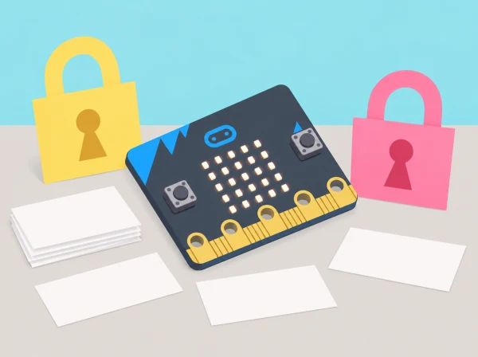

La biblioteca escolar crea una guia perquè l’alumnat reconega missatges enganyosos i entenga per què convé protegir les dades. Els equips estudien casos inventats, dissenyen un algorisme que genere una combinació fictícia i el prototipen amb micro:bit. El dispositiu és un recurs per aprendre variables, selecció, proves i depuració; no és un gestor de contrasenyes ni una eina criptogràfica segura.
BBC micro:bit, cable USB o piles adequades, ordinador amb MakeCode si està disponible, targetes amb missatges inventats, paper i retoladors. La sessió es pot simular amb targetes i pseudocodi quan falte placa o connexió. No es necessiten comptes d’usuari, serveis en línia ni dades personals.
Recolliu la classificació de missatges ficticis, diagrama de l’algorisme, taula de casos de prova, dues versions del codi i una explicació dels límits. Valoreu si l’equip identifica riscos sense culpabilitzar qui rep un missatge, empra variables i selecció amb sentit i depura sistemàticament.
No demaneu a ningú que compartisca o introduïsca una contrasenya real, no fotografieu credencials i no emmagatzemeu les combinacions de prova. Un generador fet en una placa educativa no ofereix garanties criptogràfiques, aleatorietat robusta ni emmagatzematge segur. Si apareix un missatge o incident real, pareu l’activitat i seguiu el protocol del centre amb una persona adulta responsable.
Aquesta situació adapta les tres lliçons de micro:bit Introduction to cyber security: What is cyber security?, Strong passwords i Making a password generator. La seqüència i els casos són propis; els objectius de seguretat, pseudocodi, variables, selecció, programació i depuració queden identificats.